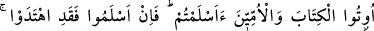
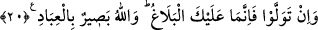

20. Eğer seninle tartışmaya girerlerse de ki: “Bana uyanlarla birlikte ben
kendimi Allah’a teslim ettim.” Ehl-i kitaba ve ümmîlere de: “Siz de Allah’a teslim
oldunuz mu?” de. Eğer teslim oldularsa doğru yolu buldular demektir. Yok eğer yüz
çevirdilerse sana düşen, yalnızca duyurmaktır. Allah kullarını çok iyi görmektedir.
Eğer onlar, Allah yanında hak dînin sadece İslâm olduğu hakkında seninle
tartışırlarsa, de ki: “Ben kendimi, kalbimi ve bütün varlığımı bana uyanlarla birlikte
sadece Allah’a teslim ettim. O’na hiçbir şeyi ortak tutmadım, ibâdetimi ve duâmı
yalnızca O’na tahsîs ettim. Bu da tevhid dinidir ki, bunun doğruluğunu siz de
biliyorsunuz, ben de biliyorum. Ben yeni bir şey getirmedim ki benimle mücâdeleniz
mâkul olsun.
Rasûlüm, kendilerine kitap verilenlere; yani yahûdî ve hıristiyanlar ile ümmîlere
(kitapları bulunmayan müşrik Araplar’a) de ki: Siz de bana tâbi olan mü’minlerin
yaptıkları gibi, İslâm’a giriyor musunuz?” Çünkü sizin İslâm’a girmenizi gerekli kılan
apaçık birçok delil gelmiştir ki bunları gözardı edemezsiniz. Bu sebeple, siz müslüman
olup gereğince amel ediyor musunuz; yoksa küfrünüzde devam mı ediyorsunuz?
Bu ifade, emir mânasında istifhâm, yani sorudur. “Hemen müslüman olunuz” demektir.
Bu, kendisine bir meseleyi bütün yönleriyle anlatıp, açıklanacak bir şey bırakmadıktan
sonra “anladın mı?” demeye benzer ki, “artık anla” demektir.
“Onlar, yani yahûdîler, hıristiyanlar ve ümmîler, sizin İslâmınız ve ihlâsınız gibi hâlis
müslüman olurlarsa şüphesiz doğru yolu bulmuş olurlar. Nasibin en büyüğünü almış ve
dalâlete düşülecek yerlerden kurtulmuş olurlar.
Eğer İslâm’ı kabule yanaşmazlar ve yüz çevirirlerse sana düşen vazife ancak
tebliğdir. Yani bu çağrıyı onlara ulaştırmaktır. Hidâyete ulaştırma sorumluluğun yoktur.
Bunu da en açık ve en güzel şekilde yapmış bulunuyorsun.
Rivâyet olunduğuna göre Rasûl-i Ekrem (s.a.), bu âyeti ehl-i kitaba okudu, onlar da
“müslüman olduk” dediler. Bunun üzerine Peygamberimiz yahûdîlere dedi ki: “Siz
Îsâ’nın, Allah’ın kelimesi, kulu ve rasûlü olduğuna şehâdet ediyor musunuz?” Onlar
da: “Bundan Allah’a sığınırız!” dediler. Peygamberimiz hıristiyanlara tekrar sordu: “Siz
Îsâ’nın Allah’ın kulu ve rasûlü olduğuna şehâdet ediyor musunuz?” Onlar da Îsâ’nın
kul olduğunu söylemekten Allah’a sığınırız” dediler. İşte Allah’ın “onlar yüz
çevirirlerse” diye haber verdiği şey budur.
“Allah, kullarının bütün hallerini hakkıyla görmektedir.” Bu cümle, hem vaaddir,
hem vaîddir; yani aynı cümle içinde hem mü’minlere cennet müjdesi ve hem de
kâfirlere azap tehdidi vardır.